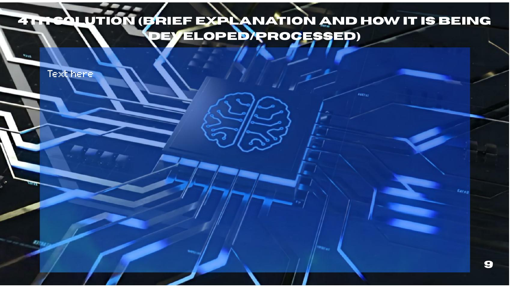

Project AGAP.AI & DepEd AI Programs
Presidential Communications Office (2026); DepEd Region VIII RM No. 250, s. 2026; DepEd Order No. 003, s. 2026 – Foundational Guidelines on AI in Basic Education.

How AI can support, not replace, Filipino learners. A solution evaluation on AI-supported EdTech in Philippine basic education.
Explore the SynthesisRampant AI use in education creates both opportunity and vulnerability—especially for Filipino learners.

Globalization today is driven by rapid advances in technology, digital connectivity, and artificial intelligence. These breakthroughs let knowledge, tools, and innovations cross borders instantly, linking classrooms in developing nations like the Philippines with advanced learning environments in Singapore, South Korea, Japan, and the United States. This interconnectedness has fueled the rise of Educational Technology (EdTech), the systematic integration of digital software and AI tools into learning systems worldwide. Adapting to these technologies has become essential for national development.
Educational Technology (EdTech) systematically integrates digital tools and AI into learning. While it can personalize instruction and modernize teaching, rapid unguided adoption creates risks to academic integrity, critical thinking, equity, and teacher–student relationships.
The rampant use of AI in online learning. AI-powered tools give students personalized support, immediate feedback, and improved efficiency, but their rapid and largely unguided adoption has created serious academic vulnerabilities: weakened critical thinking, threats to academic integrity, widening digital inequality, and a lack of AI literacy among students and educators.

86% of students worldwide already use AI in their studies. 73% want universities to train faculty on AI tools, 72% want more AI-literacy courses, yet 80% say current AI integration has not met their expectations. This is happening to us right now, in our own online classes.
Culturally, AI is shifting education from teacher-centered to student-centered learning. Economically, it raises productivity and prepares students for changing labor markets. Politically, it drives national programs like Project AGAP.AI.
AI can personalize lessons, give instant feedback, and support teachers. But its value depends on responsible use, human guidance, and equal access. It can also bring technostress, digital fatigue, and less face-to-face interaction.
Unlike Singapore, Japan, South Korea, and the US, the country still faces unreliable internet, high data costs, and urban-rural inequality, so the same technology benefits some students far more than others.

These stakeholders generally support integrating AI into Philippine education, starting with the already-implemented AGAP.AI. The government supports expanding digital connectivity as part of national development. DepEd promotes AI literacy so people use AI responsibly as an additional learning source, not a full replacement for their own effort. President Marcos Jr. supports AI making students' learning more accessible and efficient while still supporting students and educators.
Teachers and the public have growing concerns about job replacement and risks such as algorithmic bias and high implementation costs. Some teachers are also skeptical about AI ethics because of accessibility issues and doubts about its educational benefits, especially in under-resourced areas.
Both sides see digital literacy as a positive force: it reduces the time teachers spend on routine work and gives students tools and study material to learn better. This shared ground is visible in implemented projects like AGAP.AI and the AI Ready ASEAN training, which teaches proper AI digital literacy and addresses concerns early.

| Solution | Implemented by | Status |
|---|---|---|
| Project AGAP.AI | DepEd, Office of the President, DICT, LGUs, ASEAN and EdTech partners | Launched January 2026, national rollout February 2026 |
| Training to Develop AI Literacy and Policy | DepEd regional and division offices, training hubs, TESDA, UNESCO partners | Active, around 796,000 trained by February 2026 |
| Expansion of Digital Access and Infrastructure | DICT (lead), NTC, telecom companies, DepEd, LGUs, Congress | Approved January 2026, phased through 2028 |
| Shaping the Future of Philippine Education | DepEd through DepEd Order No. 003, s. 2026 | Issued February 20, 2026 |

A government initiative to integrate AI into basic education by training teachers, students, and parents in AI literacy, introducing AI-powered tools, and promoting ethical use, so AI supports rather than replaces teachers and students.
How it is being developed: Rollout runs through Schools Division and Regional Offices with designated focal persons. DepEd promotes best practices such as data privacy, human-centered AI, risk restriction, regular audits, and continuous training.
Results so far: Nearly 796,000 people completed basic AI training by February 2026, and the AI-assisted SIGLA app reportedly saves around 60,000 hours of administrative work yearly across 34,000 teachers.
Challenges: Teacher readiness, limited devices and internet, and data privacy concerns.

Instead of just introducing AI tools, this solution teaches students, teachers, and parents to use them responsibly through structured training, ethical guidelines, and school policies.
How it is being developed: DepEd issued Regional Memorandum No. 250, s. 2026 to formalize the rollout and assigned focal persons who adapt UNESCO and OECD frameworks into localized training modules. The rollout is teachers-first, through regional training hubs like Leyte Normal University, with AI concepts integrated into existing subjects instead of standalone courses.
Challenges: Administrative strain, funding deficits, infrastructure gaps, teacher resistance and job-displacement fears, weak monitoring, distant training venues for rural educators, delayed funds, and connectivity bottlenecks.

Providing reliable internet, affordable devices, electricity, and accessible online learning platforms through the DICT's National Digital Connectivity Plan, prioritizing rural, low-income, and geographically isolated communities.
How it is being developed: The NDCP expands the National Fiber Backbone across Luzon, Visayas, and Mindanao, upgrades submarine and satellite cables, deploys Free Wi-Fi sites, and develops next-generation mobile technology. Targets: 100% connectivity in public schools and health centers, 130,000 Free Wi-Fi sites, and 40–80% lower internet costs by 2028. Supporting actions include device-lending programs, affordable data plans, teacher digital training, and offline learning materials.
Challenges: High infrastructure costs, difficult geography, limited electricity, expensive internet, urban–rural inequality, inter-agency coordination, cybersecurity, and lack of technical personnel.
DepEd Order No. 003, s. 2026

The first comprehensive national guidelines for AI in basic education, issued February 20, 2026, setting principles so AI enhances learning, promotes academic integrity, and keeps human agency at the center.
How it is being developed: It uses a risk-based classification aligned with the EU AI Act, ASEAN, and UNESCO frameworks. It bans unacceptable-risk uses like facial recognition, social scoring, and manipulative AI, and restricts unsupervised AI use for Kinder to Grade 3 with parental notification.
Key provisions: Teachers stay the final decision-makers in grading and evaluation; every AI tool needs a Privacy Impact Assessment and schools must pass a Digital Maturity Assessment; vendors must submit model cards and cannot train models on DepEd data; AI literacy is built through tiered teacher training with certification.
Why it exists: AI adoption had outpaced enforceable policies, and this order provides the scaffolding for safer AI-integrated classrooms.
We picked: Expansion of Digital Access and Infrastructure.

It earned the highest overall score among the four solutions evaluated, and it is already being implemented in Philippine schools. How it was picked: all five group members rated each solution independently against class-approved criteria on a 4-point rubric (4 = Highly Evident, 1 = Minimally Evident). Scores were averaged to get the final ranking.
| Solution | Timeliness | Effectiveness | Measurable | Attainability | Relevance | Final Average | Rank |
|---|---|---|---|---|---|---|---|
| Expansion of Digital Access and Infrastructure | 3.60 | 4.00 | 4.00 | 2.60 | 3.60 | 3.56 | 1st |
| AGAP.AI | 3.80 | 4.00 | 3.00 | 3.60 | 3.00 | 3.48 | 2nd |
| Training to Develop AI Literacy and Policy | 3.20 | 3.80 | 2.80 | 3.60 | 4.00 | 3.48 | 2nd |
| Shaping the Future of Philippine Education | 3.40 | 4.00 | 3.40 | 2.80 | 3.60 | 3.44 | 4th |
Why it won: it got the highest marks for sustainability and global impact, showing long-term benefits beyond the local setting, and scored well in effectiveness, accessibility, and inclusivity, meaning it can open digital learning to more students. Its weakest score, feasibility at 2.80, is honest: funding, policies, and legal requirements must be addressed before full implementation.

Expand internet connectivity, broadband infrastructure, and public Wi-Fi; implement the NDCP and National Broadband Program.
Identify schools with poor connectivity, coordinate device and digital needs of teachers and students, map connectivity gaps, and align infrastructure with AGAP.AI readiness.
Provide sites, permits, community coordination, resources, and co-funding for barangay-level Free Wi-Fi and school connectivity.
Deliver internet services, equipment, technical expertise, and infrastructure under public-private partnerships.
Identify connectivity needs, manage digital equipment, and ensure technology supports teaching and learning.
Allocate funds for infrastructure development and maintenance.
Help identify access barriers and support proper use and care of shared digital facilities.
Policy foundations and practical contingency plans for equitable digital access.
| Challenge | What Could Go Wrong | Our Contingency Plan |
|---|---|---|
| Internet installation delays | Limited budgets and hard-to-reach locations delay connectivity. | Implement a phased rollout, starting with schools that need access most; coordinate with LGUs and providers. |
| Connection and power interruptions | Unstable internet or power outages disrupt online learning. | Provide downloadable offline materials, backup power, and alternative internet connections. |
| Lack of devices | Students lack devices, while existing equipment may break or become outdated. | Establish device-lending programs, shared equipment, and repair and replacement funds. |
| Coordination problems | Agencies and companies have conflicting schedules, responsibilities, and budgets. | Assign clear responsibilities, establish agreed deadlines, and conduct regular progress meetings. |
| Equipment failure and weak technical support | Devices and networks break down without proper maintenance. | Conduct regular equipment checks and provide trained on-site personnel and qualified technicians. |
| Cybersecurity and privacy risks | Account hacking or security breaches expose personal data. | Implement secure networks, data protection measures, and cybersecurity and safety training for users. |
We recommend the Expansion of Digital Access and Infrastructure as the foundation on which every other AI solution stands.
AI-supported education cannot help students who lack reliable internet, devices, electricity, or accessible platforms. Our evaluation ranked it first at 3.68, highest in sustainability and global impact, and it is already underway with NDCP targets set for 2028. The Philippines is not choosing an abstract proposal but scaling something real.
Prioritize rural, isolated, disadvantaged, and low-income communities in the rollout.
Sustain partnerships between government agencies, telecom companies, technology providers, and LGUs.
Build community-based access through public Wi-Fi, schools, libraries, and community learning centers.
Set up lasting technical support and maintenance so connections and devices stay functional.
Infrastructure alone is not enough. Training, responsible and ethical oversight, and digital infrastructure must work in unison. Educators and learners must commit to using AI critically and responsibly, as a tool that enhances learning rather than replaces human thought.

Presidential Communications Office (2026); DepEd Region VIII RM No. 250, s. 2026; DepEd Order No. 003, s. 2026 – Foundational Guidelines on AI in Basic Education.
Department of Information and Communications Technology (2026). National roadmap to a digitally connected Philippines; ED Council approval, January 2026.
Rong, H., & Chun, C. (2024). 86% of students use AI in studies; strong demand for AI literacy training.
75% of lower-secondary teachers in Singapore use AI in their work vs. 36% OECD average—illustrating mature system-wide integration with training.
Advantages/disadvantages of AI in education; pedagogical implications; Guidance for generative AI in education and research.
Philippine News Agency, Inquirer, DepEd and DICT press releases on AGAP.AI launch, AI Ready ASEAN training completions, and NDCP targets.
Synthesis prepared by H1101 Group 7, Mapúa-Malayan Digital College, First Term AY 2025–2026. Content is for educational purposes under the course intellectual-property notice.
Access the MS2 project files and Week 8 Worksheet.
Explore the Canva presentation and other website materials.
H1101 Group 7 — Mapúa-Malayan Digital College